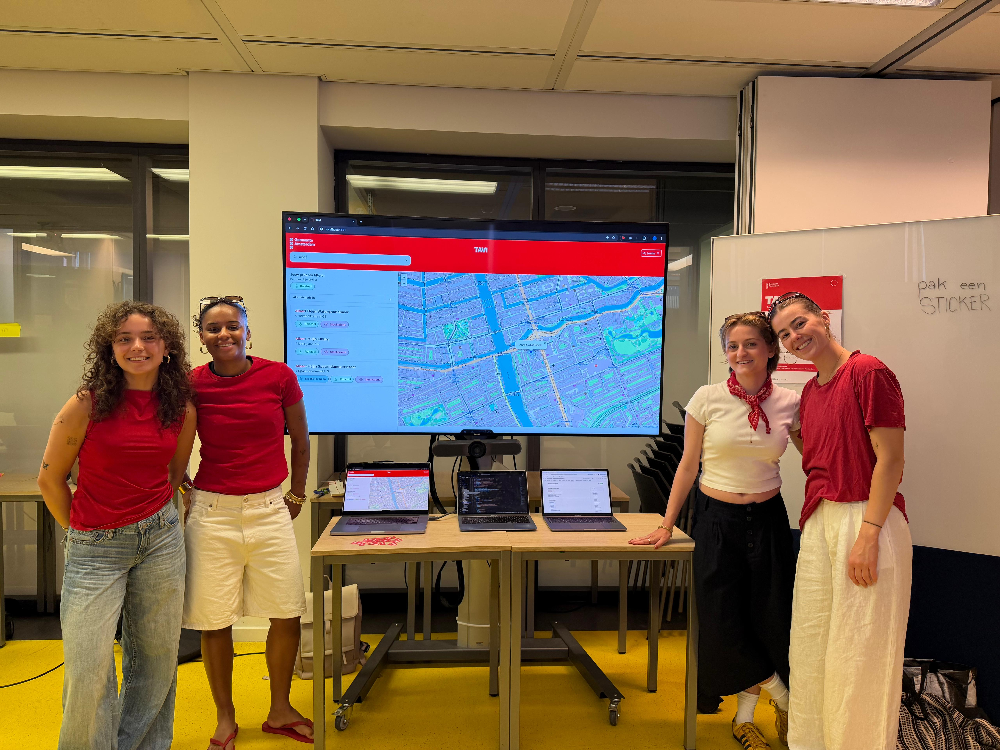

Reflectie
Reflectie

Dit project was voor mij een bewuste oefening in uit mijn comfortzone stappen. Ik vond het grappig om op te merken dat ik eigenlijk automatisch naar de designkant ging, en dat ik bewust moest switchen naar moeilijkere stukken. Die switch was niet altijd makkelijk, JavaScript bleek soms echt een uitdaging. Er waren momenten dat ik ergens lang op zat en het gevoel had dat ik er niet uit zou komen. Maar juist die momenten waren ook het meest leerzaam, omdat ik mezelf dwong om documentatie te lezen, dingen uit te proberen en niet meteen om hulp te vragen.
Één van mijn leerdoelen was het verbeteren van de kwaliteit van mijn JavaScript. Ik merk dat mijn code vaak werkt, maar dat ik te veel in één bestand gooi of functies schrijf die te lang zijn. In dit project heb ik geprobeerd daar bewuster mee om te gaan door per feature een aparte functie te schrijven en variabelen duidelijker te benoemen. Het ging niet altijd perfect, maar ik merkte al verschil in hoe leesbaar mijn code was aan het einde van het project vergeleken met het begin.
Een ander leerdoel was toegankelijkheid vanaf het begin meenemen in plaats van er achteraf aan te denken. Eerlijk gezegd ben ik daar dit project nog niet helemaal in geslaagd, de WCAG-verbeteringen kwamen grotendeels in week 4, dus toch weer aan het einde. Maar het bewustzijn is er nu wel. Ik weet nu concreet welke dingen ik aan het begin moet regelen: semantische HTML, labels, focusbeheer en kleurcontrast. Dat neem ik mee naar volgende projecten.
Tot slot had ik als leerdoel om beter mijn scope te bewaken. Ik heb de neiging om ideeën groter te maken dan de tijd toelaat, en dat merkte ik ook hier. Na de bijstelling van het concept door de opdrachtgever moesten we opnieuw prioriteiten stellen, wat in het begin vervelend voelde maar uiteindelijk heeft geleid tot een product dat beter aansluit op de echte behoefte. Die ervaring heeft me geleerd dat flexibel zijn en duidelijke keuzes maken belangrijker is dan vasthouden aan een groot oorspronkelijk idee.
Verder vond ik de samenwerking in dit teamproject uitstekend gaan en ben ik heel blij met het resultaat dat we hebben opgeleverd. Ik vind dat we een mooie website hebben neergezet, en ook nog eens op een gezellige manier! De opdrachtgever Gemeente Amsterdam was er ook super blij mee en ik ben benieuwd of dit ooit ook echt gebruikt zal worden. Wie weet.